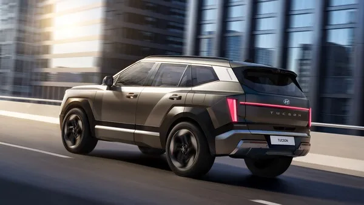
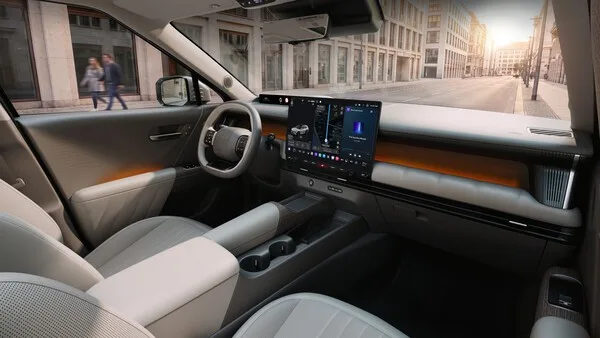

▲ 5세대 디 올 뉴 투싼의 전면. 4세대를 상징하던 파라메트릭 히든 램프가 사라지고 수직형 H-엣지 라이팅이 들어갔다 ⓒ 현대자동차
지난달까지만 해도 "예상도"였습니다. 알프스 시험 주행 중 브레이크에서 연기가 나며 정체가 드러났고, 연구용 모형 사진으로 디자인 단서가 흘러나왔습니다.
8월 19일, 현대차가 실물을 내놨습니다. 5세대 완전변경 '디 올 뉴 투싼'입니다. 2020년 4세대 이후 약 6년 만입니다.
그리고 가장 먼저 눈에 들어온 것은 없어진 것이었습니다. 4세대 투싼을 그 자체로 각인시켰던 파라메트릭 히든 램프가 사라졌습니다.
1. 사라진 것: 파라메트릭 히든 램프
4세대 투싼(2020년)의 전면은 시동을 끄면 그릴처럼 보이고, 켜면 램프가 드러나는 구조였습니다. 현대차가 '파라메트릭 히든 램프'라고 부른 이 방식은 투싼을 멀리서도 알아보게 만든 요소였습니다.
5세대에서는 이 장치가 통째로 빠졌습니다. 대신 들어간 것이 수직형 H-엣지 라이팅입니다. 현대차는 이 그래픽이 건축 조명에서 영감을 받았다고 설명했습니다.
전면 구성은 세 겹입니다.
- 수직형 H-엣지 라이팅 — 양 끝에 세로로 선 주간주행등
- 수평형 슬림 센터 램프 — 좌우를 가로지르는 간접 조명 구조
- 넓게 자리 잡은 하단 범퍼 — 스키드플레이트 형상의 실버 가니시
후면에는 프리즘 리어 램프가 들어갔습니다. 3차원 렌즈 구조로 각도에 따라 빛이 다르게 꺾이는 방식입니다.

▲ 후면에는 3차원 렌즈 구조의 프리즘 리어 램프가 좌우를 가로지른다 ⓒ 현대자동차
2. 숫자로 본 변화 — 60mm, 40mm, 그리고 29mm
차가 커졌습니다. 그것도 전 방향으로 커졌습니다.
| 항목 | 5세대 | 변화 |
|---|---|---|
| 전장 | 4,700mm | +60mm |
| 전폭 | 1,905mm | +40mm |
| 전고 | 1,685mm | — |
| 휠베이스 | 2,785mm | +30mm |
| 2열 헤드룸 | 1,031mm | +29mm |
| 2열 도어 개방각 | 83° | 73° → 83° |
이 중에서 실제로 체감되는 숫자는 아래쪽 두 개입니다.
2열 헤드룸 1,031mm. 29mm가 늘었습니다. 준중형 SUV에서 뒷좌석 머리 공간은 루프 라인을 낮추는 디자인과 늘 충돌하는 항목입니다. 그런데 전고를 키우지 않고도 확보했습니다.
2열 도어 개방각 83°. 73°에서 10° 더 열립니다. 카시트를 채워 넣거나 아이를 앉힐 때 차이가 나는 부분입니다. 스펙표에서 잘 안 보이지만 매일 쓰는 사람에게는 크게 다가옵니다.

▲ 휠베이스가 2,785mm로 30mm 늘었다. 캐릭터 라인을 줄이고 면 자체의 명암으로 볼륨을 만들었다 ⓒ 현대자동차
3. 실내 — 각을 세운 대시보드
실내에서도 방향은 같습니다. 선을 줄이고 면을 넓게 썼습니다.
대시보드는 좌우로 길게 이어지는 수평 구조입니다. 송풍구가 그 라인 안으로 들어가 있고, 앰비언트 라이트가 대시보드 중단을 따라 흐릅니다.
디스플레이는 운전석 클러스터와 센터 화면이 이어지는 형태입니다. 그 아래 물리 버튼 열이 별도로 남아 있습니다. 공조와 주요 기능을 화면 안으로 다 밀어 넣지 않았다는 뜻입니다.

▲ 대시보드는 좌우로 길게 이어지는 수평 구조다. 디스플레이 아래에 물리 버튼 열이 남아 있다 ⓒ 현대자동차
스티어링 휠은 사각에 가까운 형상입니다. 스포크가 두껍고, 가운데에는 로고 대신 점 네 개가 들어갔습니다. 아이오닉 라인업에서 쓰던 모스 부호 형태의 'H' 표기입니다.

▲ 스티어링 휠 중앙에는 로고 대신 점 네 개가 들어갔다. 아이오닉 라인업에서 쓰던 모스 부호 형태의 H 표기다 ⓒ 현대자동차
4. XRT — 아웃도어 트림이 따로 선다
이번 공개에서 별도로 소개된 것이 XRT 트림입니다.
현대차가 밝힌 XRT의 차별 요소는 다음과 같습니다.
- 블랙 휠 아치 가니시 — 바퀴 주변을 검게 둘러 차체를 더 낮고 넓어 보이게 한다
- 단조 카본 패턴 — 무늬가 불규칙하게 흐르는 마감재
- 전용 범퍼 구성 — 기본형보다 각을 세운 하단 처리
XRT는 현대차가 북미에서 먼저 키운 이름입니다. 산타페와 팰리세이드에 붙었고, 이제 투싼까지 내려왔습니다. 실제 험로 주파 성능보다는 외관과 감성 중심인 경우가 많다는 점은 감안할 필요가 있습니다.

▲ 아웃도어 성향의 XRT 트림이 함께 공개됐다. 블랙 휠 아치 가니시와 단조 카본 패턴이 적용된다 ⓒ 현대자동차
5. 아직 공개되지 않은 것들
이번 발표는 "디자인 공개"였습니다. 다음 항목은 아직 나오지 않았습니다.
- 파워트레인 — 가솔린·하이브리드 구성과 출력 미공개
- 가격 — 트림별 가격 미공개
- 출시 시기 — 국내 판매 개시일 미공개
- 연비·주행거리 — 인증 수치 미공개
따라서 지금 시점에서 "사도 되나"를 판단하기는 이릅니다. 특히 하이브리드 구성이 어떻게 짜이는지가 관건입니다. 같은 그룹의 스포티지와는 파워트레인을 공유해 왔습니다.
또 하나 짚어둘 부분. 4세대 투싼은 그랜저·카니발 등과 함께 51만 대 리콜 명단에 올랐던 이력이 있습니다. 완전변경 초기 물량을 고민한다면 초기 생산분의 안정화 기간을 감안하는 편이 안전합니다.
6. 정리
5세대 디 올 뉴 투싼은 2026년 8월 19일 디자인이 공개됐습니다. 전장 4,700mm, 전폭 1,905mm, 휠베이스 2,785mm로 각각 60mm·40mm·30mm 커졌습니다.
가장 큰 변화는 파라메트릭 히든 램프의 삭제입니다. 수직형 H-엣지 라이팅과 수평형 슬림 센터 램프가 자리를 대신했고, 후면에는 프리즘 리어 램프가 들어갔습니다.
실내에서 눈여겨볼 숫자는 2열 헤드룸 1,031mm(+29mm)와 2열 도어 개방각 83°입니다. 파워트레인·가격·출시 시기는 아직 공개되지 않았습니다.